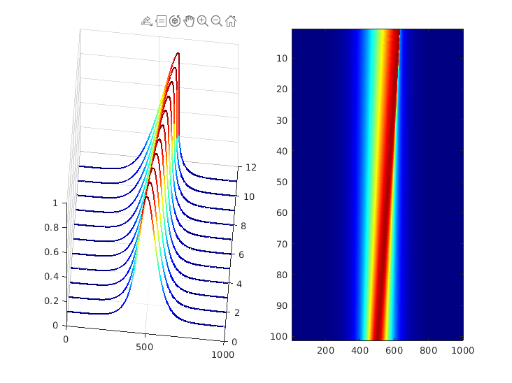

Contents
clear all, close all, clc
nu=0.001;
L = 20;
N = 1000;
dx = L/N;
x = -L/2:dx:L/2-dx;
kappa = (2*pi/L)*[-N/2:N/2-1];
kappa = fftshift(kappa');
u0 = sech(x);
dt = 0.025;
t = 0:dt:100*dt;
[t,u] = ode45(@(t,u)rhsBurgers(t,u,kappa,nu),t,u0);
subplot(1,2,1)
h=waterfall(real(u(1:10:end,:)));
set(h,'LineWidth',2,'FaceAlpha',.5);
colormap(jet/1.5)
view(5,55)
subplot(1,2,2)
imagesc(flipud(real(u)));
colormap jet

FIGURES (PRODUCTION)
figure
CC = colormap(jet(100));
dt = 0.1;
for k = 1:100
if(mod(k-1,10)==0)
plot(x,real(u(k,:)),'k','LineWidth',1.5)
hold on, grid on, drawnow
end
end
axis([-L/2 L/2 -.1 1.1])
set(gca,'LineWidth',1.2,'FontSize',12);
set(gcf,'Position',[100 100 550 220]);
set(gcf,'PaperPositionMode','auto')
print('-depsc2', '-loose', '../../figures/FFTBurgers1');
figure
subplot(1,2,1)
h=waterfall(real(u(1:10:end,:)));
set(h,'LineWidth',2,'FaceAlpha',.5);
colormap(jet/1.5)
view(5,55)
set(gca,'LineWidth',1.5)
set(gca,'XTick',[0 500 1000],'XTickLabels',{})
set(gca,'ZTick',[0 .5 1],'ZTickLabels',{})
set(gca,'YTick',[0 5 10],'YTickLabels',{})
set(gca,'YLim',[1 11])
set(gca,'ZLim',[-.1 1.1])
subplot(1,2,2)
imagesc(flipud(real(u)));
set(gca,'LineWidth',1.5)
set(gca,'XTick',[0 500 1000],'XTickLabels',{})
set(gca,'YTick',[0 50 100],'YTickLabels',{})
colormap jet
set(gcf,'Position',[100 100 600 250])
set(gcf,'PaperPositionMode','auto')
print('-depsc2', '-loose', '../../figures/FFTBurgers2');
Error using matlab.graphics.internal.name (line 101)
Cannot create output file '../../figures/FFTBurgers1.eps'.
Error in print (line 71)
pj = matlab.graphics.internal.name( pj );
Error in print (line 210)
origPrint(args{:});
Error in CH02_SEC03_3_FFTBurgers (line 50)
print('-depsc2', '-loose', '../../figures/FFTBurgers1');